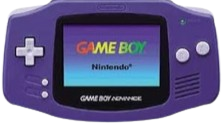
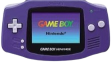
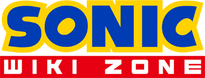
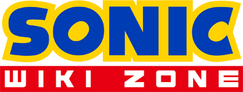

O Que É O Sonic?
Ele é um ouriço antropomórfico azul, que surgiu em 1991 com seu primeiro jogo Sonic The Hedgehog lançado para o Sega Mega Drive aqui no Brasil, Japão e Europa, mas nos Estados Unidos se chama de Sega Genesis, e desde de então continua com a sua franquia até os dias de hoje com vários jogos e personagens (tem mais de 100 personagens) agora vamos a minha 1° vez interagindo com esta franquia.
Como Eu Conheci Esta Franquia?
Foi mais ou menos à uns 10 anos atrás quando eu tinha o meu primeiro console o GBA SP (Game Boy Advance Special) que é um console que tenho uma certa nostalgia até hoje, esperando um dia consegui-lo novamente, que mesmo não obtendo-o de novo eu possuo uma versão mais antiga chamada apenas de GBA.
 

Com esse console eu joguei meu 1° Sonic que foi Sonic Advance de 2001 e Sonic The Hedgehog: Genesis de 2006 e foi assim que fui introduzido mas ão virei fã logo de cara, isso foi somente em...
2020
Que foi quando eu tinha jogado um jogo que nunca havia terminado antes chamado de "Sonic Unleashed"

Eu terminei todas as 3 versões que esse jogo possui (é que estas versões possuem diferenças umas com as outras) e após ter feito isso me deu vontade de ir explorando mais afundo sobre sua história, personagens, jogos, o mundo, etc. (Me fez ir atrás de assistir videos, ler forúms e ver wikis.)
2024 - Hoje Em Dia
O que nos leva nos dias de hoje que após ter assistido varios youtubers (como Cybershell, Peter Knetter, Channel Pup, etc.)
Depois de ter lido o Sonic Retro, Sonic Wiki Zone
 

E ter visto eventos como o SHC (Sonic Hacking Contest), SAGE (Sonic Amateur Games Expo), dentre outros.
Por fim, eu diria que sou fã fanático dessa franquia e que eu amo estes jogos (só que o Sonic nem é o meu personagem favorito, ele é apenas um deles o meu mesmo é o Travis Touchdown de No More Heroes mais isso é uma história para outro dia)
Acabou :) espero que tenha gostado de ler.
Bonus/Menção Honorável
Tem também o Sonic.exe que influenciou de certo modo também com as creepypastas e jogos mais eu não tõ muito por dentro dessa parte da comunidade não, mais devo fazer essa menção pois pelo menos conheço.